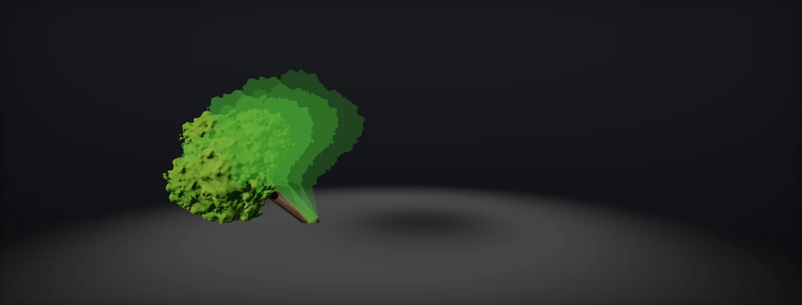

Skinned and Baked Foliage Animation
When procedural wind is not enough: bones and skinning, spring simulation, vertex animation textures with their size, precision, modes and playback, Nanite skinning in Unreal, and how to choose, built in Unity HDRP and Unreal.

When procedural wind is not enough
Procedural wind covers almost everything foliage does all day. It cannot react to physics, follow a scripted event exactly, or show motion that has no formula (a tree splitting and falling, a bush blown apart). For those, two other tools exist: with bones, and (VAT) baked from a simulation.
| Method | Good for | Cost | Limits |
|---|---|---|---|
| Procedural wind (vertex shader) | Every plant, all the time | Vertex ALU per pass; no animation data | Only motion you can write as a formula; no collisions |
| Bones and skinning | Hero trees, physics interaction, cut and bend, simulated branches | Bone update and upload per instance per frame, skinning per vertex | Hard to instance; few hundred animated plants at most on most targets |
| Vertex animation textures | Scripted events: a tree falling, grass cut by a mower, a bush blown apart | One or two texture reads per vertex; memory per frame | Fixed, pre-baked motion; changes need a re-bake |
| Nanite skinning (Unreal 5.7+, experimental) | Dense Nanite foliage with skeletal wind (Dynamic Wind plugin) | Skinning in Nanite's GPU pipeline | Experimental: global wind direction only, no collision yet |
Bones and skinning
A skinned mesh stores, per vertex, up to four bone indices and weights. Each frame the bones' matrices are computed on the CPU (or by an animation system on the GPU) and the vertex is moved by the weighted sum of its bones: p′ = Σ wi Mi p. For a tree, bones follow the branch hierarchy: one per trunk segment and per larger branch. Leaves ride on the nearest bone and add procedural flutter:
The vertex cost is moderate; what limits skinned foliage is the per-instance work: every animated plant needs its own bone pose, updated, uploaded and usually drawn as its own object, which breaks the instancing that makes forests possible (instancing). Shipped games therefore skin only the plants near the player and fall back to procedural wind or static meshes beyond.
Unreal 5.7 brought bones back for foliage at scale: Nanite Foliage drives wind through bone hierarchies (Nanite Skinning with the Dynamic Wind plugin) instead of World Position Offset, so Nanite can keep tight cluster bounds. It is experimental; Epic lists global wind direction only, no collision with characters and no near-field simulation yet.
Driving the bones
Bones need something to move them. For branches the standard model is a damped spring per bone: the wind pushes, the branch's stiffness pulls back, damping takes energy out. Two numbers per branch, natural frequency and damping ratio, set its character:
Real branches have natural frequencies from around 0.2 Hz (trunks) to several hertz (twigs) and low damping, which is why they keep swinging after a gust. Springs on a bone chain also carry motion from parent to child with a delay, the look that procedural wind fakes with phase offsets. In Unity this is a few lines in a job or an Animation Rigging constraint; in Unreal, Control Rig or the Dynamic Wind plugin's simulation groups. Character collision adds a push force on the bones within reach.
Vertex animation textures
A VAT stores a whole animation in textures: one texel per vertex, one row (or block of rows) per frame. The vertex shader looks up its own texel for the current frame and moves the vertex there; a second texture holds the normals. Houdini's SideFX Labs VAT tool bakes this from any simulation and exports the mesh, the textures and matching shaders for Unity and Unreal:
Each vertex needs to know which column it reads. Tools store that as a lookup UV in a spare channel; reading by vertex index works only if the engine keeps the vertex order (mesh optimisation on import reorders vertices). The data must be exact, so VAT textures are uncompressed, without mipmaps, sampled with point filtering, and with sRGB off.
Precision and bounds
Positions in a VAT have the same precision rules as pivots in UVs. Storing offsets from the rest pose instead of absolute positions keeps the values small, and normalising them to the animation's bounds lets 16-bit integer formats keep a constant step:
A falling tree moves several metres: half floats then step by millimetres to centimetres near the end of the fall, normalised 16-bit by fractions of a millimetre. Normals tolerate 8 bits per channel. Whatever the format, the renderer's bounds must cover the whole animation, or the tree is culled mid-fall.
Soft body, rigid pieces and remeshing
VAT tools offer several modes, each storing different data:
- Soft body: every vertex every frame. Any deformation; most memory.
- Rigid pieces: one position and rotation per piece per frame; the shader rotates each piece's vertices around its pivot. For things that break into rigid parts: a tree splitting into trunk sections, a fence shattering.
- Dynamic remeshing (fluids): the vertex count changes per frame, so the mesh is a pool of triangles and the texture says where each one goes.
- Sprites: particles as camera-facing cards.
Playing it back
Baked frames are discrete. Snapping to the nearest one stutters; blending the two neighbouring frames costs a second texture read and removes most of the error:
- Time per instance. A shared animation looks cloned; offset the start time by a hash of the position, or set it when the event triggers.
- Motion vectors: read the previous frame's position too and output the difference, as for wind (motion vectors).
- LODs need their own lookup UVs pointing at the vertices they keep, or their own bake.
- Swap in and out: show the VAT mesh only during the event and swap back to the normal instanced plant (or its fallen state) afterwards.
Choosing a method
| You need | Use |
|---|---|
| Wind on every plant in the level | Procedural (Foliage Wind) |
| A tree that falls the same way every time | Rigid-piece VAT, or a skinned mesh with a baked animation |
| Grass that is cut and stays cut | Swap to a cut mesh or scale the blades in the shader with an interaction texture; VAT only for the cutting motion |
| Branches that react to a character pushing through | Bones with spring simulation on the few nearby plants, procedural wind on the rest |
| A cinematic hero tree in a storm | Bones driven by a simulation, or an Alembic or VAT bake from Houdini |
Build it in Unity HDRP
The route bakes a falling tree in Houdini with the Labs VAT tool, imports the textures with lossless settings, plays them back in a Custom Function with frame blending, and swaps the animated mesh in only while the event runs. Written for Unity 6 with HDRP 17; Unity 2022 LTS works the same apart from a few renamed menu entries.
- In Houdini, simulate the event (Vellum for soft deformation, RBD for a tree breaking into pieces). Add a Labs Vertex Animation Textures ROP, choose the mode (Soft-Body or Rigid-Body) and Unity as the target, and render. It writes an FBX with a lookup UV and the textures, and reports the frame count and bounds the shader needs.
- Import the textures: Texture Type Default, sRGB off, Generate Mip Maps off, Filter Mode Point, Wrap Mode Clamp, Compression None, and for the EXR position texture the format RGBA Half. Import the FBX with Optimize Mesh off so vertices keep the baked order.
- SideFX ships matching Shader Graphs for Unity; use them, or build your own with the file here: In the vertex stage, add a Custom Function node. Set Type to
File, Source toVATSoft.hlsland Name toVATSoft(without the_floatsuffix). Add the inputs PositionTex (Texture2D), NormalTex (Texture2D), PositionOS (Vector 3), LookupUV (Vector 2), Frames (Float), FPS (Float), FrameHeight (Float), Time (Float), StartTime (Float), Loop (Float), Normalised (Float), BoundsMin (Vector 3), BoundsMax (Vector 3) and the outputs OutPositionOS (Vector 3), OutNormalOS (Vector 3), in that order and with those types: they must match the function's parameters. Feed LookupUV from the UV channel the baker wrote, and Frames, FPS, FrameHeight and the bounds from the values the baker reports. - Connect the outputs to Vertex Position and Vertex Normal; enable Motion Vector For Vertex Animation on the material. Expose
_StartTimeas a Float property and connect it to StartTime. - Enlarge the renderer bounds to the animation's extent (the baked bounds plus the rest mesh). Put
VATTrigger.cson the tree and callPlay()from gameplay.
#ifndef ATLAS_VAT_SOFT_INCLUDED
#define ATLAS_VAT_SOFT_INCLUDED
// Soft-body vertex animation texture playback with frame blending.
// PositionTex: RGBA16F, offset from the rest position (object space, metres), normalised to the bounds
// when Normalised = 1 (stored 0..1 -> BoundsMin..BoundsMax), raw half floats when 0.
// NormalTex: RGBA8, normal * 0.5 + 0.5.
// LookupUV: the vertex's texel centre in frame 0 (a spare UV channel written by the baker).
// FrameHeight: height of one frame in UV units (rows per frame / texture height).
// Time is in seconds; StartTime lets each instance or event begin on its own.
void VATSoft_float(UnityTexture2D PositionTex, UnityTexture2D NormalTex, float3 PositionOS, float2 LookupUV,
float Frames, float FPS, float FrameHeight, float Time, float StartTime, float Loop,
float Normalised, float3 BoundsMin, float3 BoundsMax,
out float3 OutPositionOS, out float3 OutNormalOS)
{
float t = max(Time - StartTime, 0.0) * FPS;
t = Loop > 0.5 ? fmod(t, Frames) : min(t, Frames - 1.0);
float f0 = floor(t), f1 = Loop > 0.5 ? fmod(f0 + 1.0, Frames) : min(f0 + 1.0, Frames - 1.0), k = t - f0;
float2 uv0 = LookupUV + float2(0.0, f0 * FrameHeight);
float2 uv1 = LookupUV + float2(0.0, f1 * FrameHeight);
float3 o0 = SAMPLE_TEXTURE2D_LOD(PositionTex.tex, PositionTex.samplerstate, uv0, 0).rgb;
float3 o1 = SAMPLE_TEXTURE2D_LOD(PositionTex.tex, PositionTex.samplerstate, uv1, 0).rgb;
if (Normalised > 0.5) { o0 = lerp(BoundsMin, BoundsMax, o0); o1 = lerp(BoundsMin, BoundsMax, o1); }
float3 n0 = SAMPLE_TEXTURE2D_LOD(NormalTex.tex, NormalTex.samplerstate, uv0, 0).rgb * 2.0 - 1.0;
float3 n1 = SAMPLE_TEXTURE2D_LOD(NormalTex.tex, NormalTex.samplerstate, uv1, 0).rgb * 2.0 - 1.0;
OutPositionOS = PositionOS + lerp(o0, o1, k); // blend two frames: no stutter
OutNormalOS = normalize(lerp(n0, n1, k));
}
#endif// Assets/Scripts/VATTrigger.cs: starts a baked event (a falling tree) on this renderer only.
// Uses a material instance for the few objects that are mid-event; the rest keep the shared material.
using UnityEngine;
public class VATTrigger : MonoBehaviour
{
public Renderer vatRenderer; // the VAT version of the plant, disabled until the event
public Renderer staticRenderer; // the normal instanced plant
public float duration = 5f; // seconds of baked animation
static readonly int StartId = Shader.PropertyToID("_StartTime");
public void Play()
{
staticRenderer.enabled = false;
vatRenderer.enabled = true;
vatRenderer.material.SetFloat(StartId, Time.timeSinceLevelLoad); // .material creates an instance for this object only
Invoke(nameof(Finish), duration);
}
void Finish() { /* swap to the fallen-state mesh here, or leave the last frame playing (Loop = 0 holds it) */ }
}Bones in Unity: a SkinnedMeshRenderer with a few bones per tree, driven by a job that integrates one damped spring per bone, works for the handful of plants around the player. Keep everything further away on the instanced, procedurally animated path.
Build it in Unreal Engine
Three routes in Unreal: VAT through the Labs material functions or a Custom node, skeletal meshes with Control Rig or physics for interaction, and the experimental Nanite Foliage path with skeletal Dynamic Wind. Written for Unreal Engine 5.6 and later. Substrate is production-ready from 5.7; check Project Settings > Rendering > Substrate to see which material model a project uses.
- Bake with the Labs VAT ROP targeting Unreal. Import the EXR with Compression Settings
HDR(orRGBA16F), Mip Gen SettingsNoMipmaps, FilterNearest, sRGB off; the normal texture likewise withVectorDisplacementmapcompression. Import the FBX with full-precision UVs so the lookup UV stays exact. - Use the Labs VAT material functions, or a Custom node with
VATSoft.ush: transform its output with TransformVector Local to World into World Position Offset, untick Tangent Space Normal and feed the decoded normal (transformed to world) into Normal. Enable velocities for vertex deformation in the project settings. - Event playback: a Blueprint hides the instanced plant, spawns the VAT static mesh, and sets
StartTimeon a dynamic material instance to the current game time. Increase the mesh's Bounds Scale so it is not culled mid-fall. - Skeletal foliage for interaction: a Skeletal Mesh per plant with a Physics Asset (capsules on branches) or Control Rig springs. Use it only near the player and swap to the instanced static mesh beyond.
- Nanite Foliage (experimental, 5.7+): enable it in Project Settings > Rendering and restart; enable the Dynamic Wind plugin; create a Dynamic Wind Skeletal Data asset whose Simulation Groups classify the bones (trunk, branches, leaves) and set their wind influence. Skinning stops below Animation Min Screen Size. Read the current documentation first: the feature and its limits are changing between releases.
// Custom node "VATSoft" (World Position Offset). Inputs: PosTex, NrmTex (Texture Object; Unreal adds PosTexSampler and NrmTexSampler), // LookupUV (float2, TexCoord index written by the baker), Frames, FPS, FrameHeight, Time, StartTime (float), // BoundsMin, BoundsMax (float3, cm, local). Output: CMOT Float 3 = local offset (Local -> World with TransformVector). // Additional Output: Normal (Float 3, local). float t = max(Time - StartTime, 0.0) * FPS; t = min(t, Frames - 1.0); float f0 = floor(t), f1 = min(f0 + 1.0, Frames - 1.0), k = t - f0; float2 uv0 = LookupUV + float2(0.0, f0 * FrameHeight), uv1 = LookupUV + float2(0.0, f1 * FrameHeight); float3 o0 = lerp(BoundsMin, BoundsMax, Texture2DSampleLevel(PosTex, PosTexSampler, uv0, 0).rgb); float3 o1 = lerp(BoundsMin, BoundsMax, Texture2DSampleLevel(PosTex, PosTexSampler, uv1, 0).rgb); float3 n0 = Texture2DSampleLevel(NrmTex, NrmTexSampler, uv0, 0).rgb * 2.0 - 1.0; float3 n1 = Texture2DSampleLevel(NrmTex, NrmTexSampler, uv1, 0).rgb * 2.0 - 1.0; Normal = normalize(lerp(n0, n1, k)); return lerp(o0, o1, k);
Unreal also ships an AnimToTexture plugin that bakes skeletal animation into textures inside the editor, useful for animated props without Houdini.
Sources and further reading
The formulas and engine details in this unit come from these references. Engine documentation changes between versions.
- DocsOfficial Labs Vertex Animation Textures 3.0 FAQ and linksSideFXModes, engine shaders and setup for Unity and Unreal.
- TutorialLabs Vertex Animation Textures 3.0, part 2: soft-body deformationSideFX LabsThe soft-body workflow, lookup UVs and import settings.
- DocsNanite FoliageEpic GamesNanite Assemblies, Nanite Skinning with Dynamic Wind, Nanite Voxels, and their limits.
- BookGPU Gems 3, chapter 6: GPU-generated procedural wind animations for treesRenaldas Zioma · NVIDIABranch hierarchies simulated as springs on the GPU.
- ArticleDamping ratioWikipediaDamped oscillators and the overshoot formula.